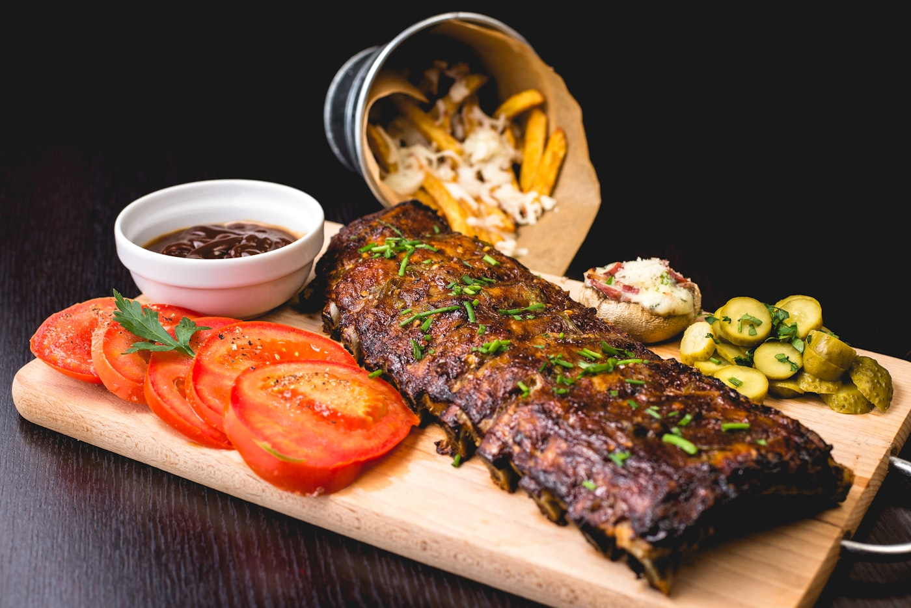

01
8/13（四）
高雄 → 東京 → 仙台
抵達日 · 入住 KOKO HOTEL 仙台駅前 West（第 1／3 晚）



-
07:55華航起飛 · 高雄 → 東京
預計 12:35 抵達（成田／羽田依實際班機）。下機後領行李、買交通票或啟用 JR Pass。
-
午後新幹線 東京 → 仙台
東北新幹線「はやぶさ／やまびこ」約 1.5–2 小時。建議事先劃位，行李可放大型置物區。
-
傍晚名掛丁商店街 · 辦理入住
入住 KOKO HOTEL 仙台駅前 West（中央 3-8-27，〒980-0021）。已預訂：2026/8/13–8/16（3 晚）。車站西口徒步可達，名掛丁就在附近，補水、買毛豆泥甜點當點心都很方便。
-
晚上AER 展望台 → 善治郎牛舌
AER 大樓展望台可看仙台夜景。晚餐推薦「上撰極厚真中牛舌定食」（仙台站 3F 牛舌通／站前本店）。
長途日：晚餐後早點休息，為隔天松島留體力。